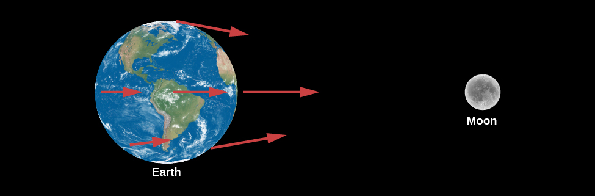
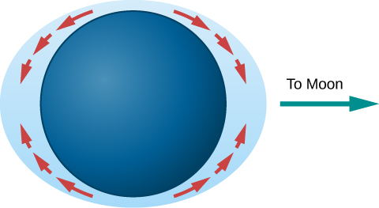
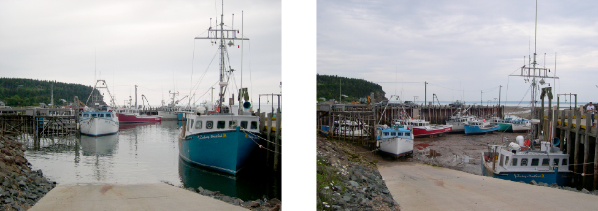
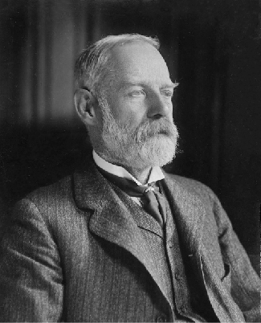

4.6 Ocean Tides and the Moon
Learning Objectives
By the end of this section, you will be able to:
- Describe what causes tides on Earth
- Explain why the amplitude of tides changes during the course of a month
Anyone living near the sea is familiar with the twice-daily rising and falling of the tides. Early in history, it was clear that tides must be related to the Moon because the daily delay in high tide is the same as the daily delay in the Moon’s rising. A satisfactory explanation of the tides, however, awaited the theory of gravity, supplied by Newton.
The Pull of the Moon on Earth
The gravitational forces exerted by the Moon at several points on Earth are illustrated in Figure 4.16. These forces differ slightly from one another because Earth is not a point, but has a certain size: all parts are not equally distant from the Moon, nor are they all in exactly the same direction from the Moon. Moreover, Earth is not perfectly rigid. As a result, the differences among the forces of the Moon’s attraction on different parts of Earth (called differential forces) cause Earth to distort slightly. The side of Earth nearest the Moon is attracted toward the Moon more strongly than is the center of Earth, which in turn is attracted more strongly than is the side opposite the Moon. Thus, the differential forces tend to stretch Earth slightly into an oblate spheroid (which is something like an American football shape), with its long diameter pointed toward the Moon.

Figure 4.16. The Moon’s differential attraction is shown on different parts of Earth. (Note that the differences have been exaggerated for educational purposes.)
If Earth were made of water, it would distort until the Moon’s differential forces over different parts of its surface came into balance with Earth’s own gravitational forces pulling it together. Calculations show that in this case, Earth would distort from a sphere by amounts ranging up to nearly 1 meter. Measurements of the actual deformation of Earth show that the solid Earth does distort, but only about one-third as much as water would, because of the greater rigidity of Earth’s interior.
Because the tidal distortion of the solid Earth amounts—at its greatest—to only about 20 centimeters, Earth does not distort enough to balance the Moon’s differential forces with its own gravity. Hence, objects at Earth’s surface experience tiny horizontal tugs, tending to make them slide about. These tide-raising forces are too insignificant to affect solid objects like astronomy students or rocks in Earth’s crust, but they do affect the waters in the oceans.
The Formation of Tides
The tide-raising forces, acting over a number of hours, produce motions of the water that result in measurable tidal bulges in the oceans. Water on the side of Earth facing the Moon flows toward it, with the greatest depths roughly at the point below the Moon. On the side of Earth opposite the Moon, water also flows to produce a tidal bulge (Figure 4.17).

Figure 4.17. Differences in gravity cause tidal forces that push water in the direction of tidal bulges on Earth.
You can run this animation for a visual demonstration of the tidal bulge.
Note that the tidal bulges in the oceans do not result from the Moon’s compressing or expanding the water, nor from the Moon’s lifting the water “away from Earth.” Rather, they result from an actual flow of water over Earth’s surface toward the two regions below and opposite the Moon, causing the water to pile up to greater depths at those places (Figure 4.18).

Figure 4.18. This is a side-by-side comparison of the Bay of Fundy in Canada at high and low tides. (credit a, b: modification of work by Dylan Kereluk)
In the idealized (and, as we shall see, oversimplified) model just described, the height of the tides would be only a few feet. The rotation of Earth would carry an observer at any given place alternately into regions of deeper and shallower water. An observer being carried toward the regions under or opposite the Moon, where the water was deepest, would say, “The tide is coming in”; when carried away from those regions, the observer would say, “The tide is going out.” During a day, the observer would be carried through two tidal bulges (one on each side of Earth) and so would experience two high tides and two low tides.
The Sun also produces tides on Earth, although it is less than half as effective as the Moon at tide raising. The actual tides we experience are a combination of the larger effect of the Moon and the smaller effect of the Sun. When the Sun and Moon are lined up (at new moon or full moon), the tides produced reinforce each other and so are greater than normal (Figure 4.19). These are called spring tides (the name is connected not to the season but to the idea that higher tides “spring up”). Spring tides are approximately the same, whether the Sun and Moon are on the same or opposite sides of Earth, because tidal bulges occur on both sides. When the Moon is at first quarter or last quarter (at right angles to the Sun’s direction), the tides produced by the Sun partially cancel the tides of the Moon, making them lower than usual. These are called neap tides.
![Tides Caused by Different Alignments of the Sun and Moon. In this illustration, the Earth is drawn as a dark blue disk within a light blue ellipse representing the oceans. In panel (a), at left and labeled “Spring tide”, the perimeter of the ellipse furthest from the Earth’s surface at the points “below” the Sun and Moon. The direction to the Moon is indicated with an arrow pointing left, and the Sun with an arrow pointing to the right. In panel (b), at right and labeled “Neap tide”, the perimeter of the ellipse comes closest to the Earth’s surface at the point “below” the Sun indicated with an arrow pointing right. The ellipse is furthest from the surface at the point below the Moon, indicated with an arrow pointing upward.](../img/OSC_Astro_04_06_Tides.jpg)
Figure 4.19. (a) In spring tides, the Sun’s and Moon’s pulls reinforce each other. (b) In neap tides, the Sun and the Moon pull at right angles to each other and the resulting tides are lower than usual.
The “simple” theory of tides, described in the preceding paragraphs, would be sufficient if Earth rotated very slowly and were completely surrounded by very deep oceans. However, the presence of land masses stopping the flow of water, the friction in the oceans and between oceans and the ocean floors, the rotation of Earth, the wind, the variable depth of the ocean, and other factors all complicate the picture. This is why, in the real world, some places have very small tides while in other places huge tides become tourist attractions. If you have been in such places, you may know that “tide tables” need to be computed and published for each location; one set of tide predictions doesn’t work for the whole planet. In this introductory chapter, we won’t delve further into these complexities.
George Darwin and the Slowing of Earth
The rubbing of water over the face of Earth involves an enormous amount of energy. Over long periods of time, the friction of the tides is slowing down the rotation of Earth. Our day gets longer by about 0.002 second each century. That seems very small, but such tiny changes can add up over millions and billions of years.
Although Earth’s spin is slowing down, the angular momentum (see Orbits and Gravity) in a system such as the Earth-Moon system cannot change. Thus, some other spin motion must speed up to take the extra angular momentum. The details of what happens were worked out over a century ago by George Darwin, the son of naturalist Charles Darwin. George Darwin (see Figure 4.20) had a strong interest in science but studied law for six years and was admitted to the bar. However, he never practiced law, returning to science instead and eventually becoming a professor at Cambridge University. He was a protégé of Lord Kelvin, one of the great physicists of the nineteenth century, and he became interested in the long-term evolution of the solar system. He specialized in making detailed (and difficult) mathematical calculations of how orbits and motions change over geologic time.

Figure 4.20. George Darwin is best known for studying Earth’s spin in relation to angular momentum.
What Darwin calculated for the Earth-Moon system was that the Moon will slowly spiral outward, away from Earth. As it moves farther away, it will orbit less quickly (just as planets farther from the Sun move more slowly in their orbits). Thus, the month will get longer. Also, because the Moon will be more distant, total eclipses of the Sun will no longer be visible from Earth.
Both the day and the month will continue to get longer, although bear in mind that the effects are very gradual. Darwin’s calculations were confirmed by mirrors placed on the Moon by Apollo 11 astronauts. These show that the Moon is moving away by 3.8 centimeters per year, and that ultimately—billions of years in the future—the day and the month will be the same length (about 47 of our present days). At this point the Moon will be stationary in the sky over the same spot on Earth, meaning some parts of Earth will see the Moon and its phases and other parts will never see them. This kind of alignment is already true for Pluto’s moon Charon (among others). Its rotation and orbital period are the same length as a day on Pluto.
Key Concepts and Summary
The twice-daily ocean tides are primarily the result of the Moon’s differential force on the material of Earth’s crust and ocean. These tidal forces cause ocean water to flow into two tidal bulges on opposite sides of Earth; each day, Earth rotates through these bulges. Actual ocean tides are complicated by the additional effects of the Sun and by the shape of the coasts and ocean basins.
Key terms
- tides: alternate rising and falling of sea level caused by the difference in the strength of the Moon’s gravitational pull on different parts of Earth
Source: Andrew Fraknoi, David Morrison, Sidney C. Wolff Astronomy 2e, OpenStax, 2022. Licensed under CC BY-NC-SA 4.0. Converted to Markdown; text unchanged, interactive embeds omitted.